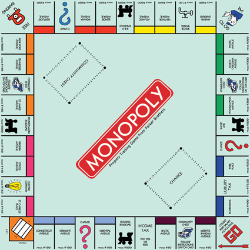

El juego de mesa mas vendido de la historia
Antes
Un juego creado con la función de servir como herramienta para enseñar las teorías acerca de la justicia social y economica extraidas del estudio titulado Progreso y Miseria de Henry George.

Monopoly
Comercializado por vez primera en el año de 1936.
A lo largo de 80 años, el juego ha sufrido una notable evolución. Sus multiples ediciones y sus tantas versiones han dado pie a que se cambiara desde la caja que lo contiene hasta los elementos que lo componen. Logrando así, mantenerse como el favorito a través de las decadas
Ahora
Con los años la finalidad del juego cambió para solo disfrutar un buen rato, negociando propiedades y hasta haciendo uso de medios electronicos para todas las transacciones que requiere el juego.
Con informacion de Grafifica.info.cultural visual